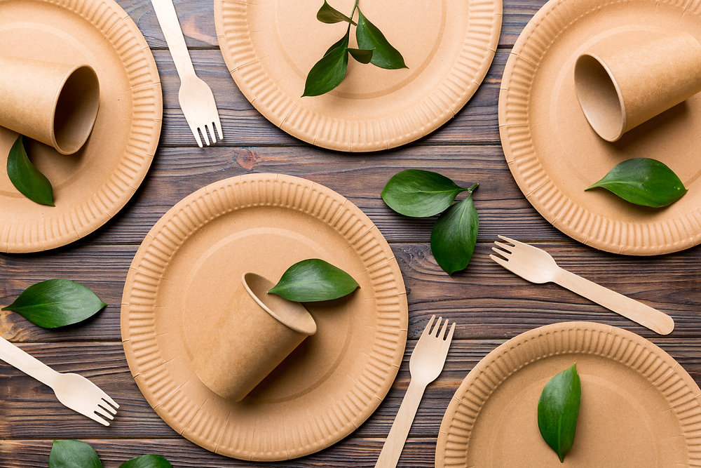

Los vasos y platos sostenibles son alternaticvas ecológicas a la vajilla de plástico que utilizan materiales renovables como la caña de azúcar, el bambú, residuos de alimentos que son biodegradables y compostables
